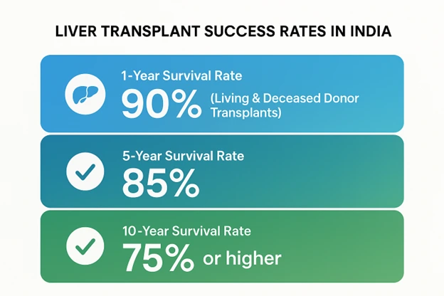
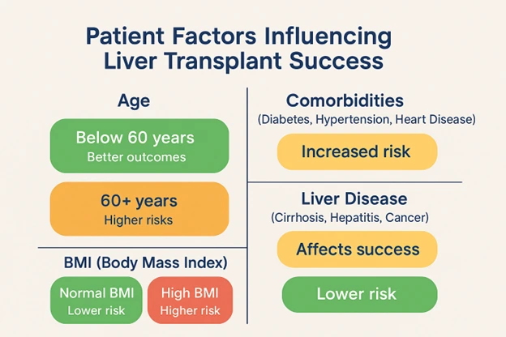

Insights into Liver Transplant Success Rates in India: Key Factors, Statistics, and Expert Perspectives
03 Dec 2025

Ravi, a 45-year-old man who had always been active, working in a corporate job, spending time with his family, and enjoying his life. But suddenly, he started feeling weak, fatigued, and unable to carry out everyday tasks. After multiple hospital visits and tests, he was diagnosed with end-stage liver disease.
For Ravi and many like him, a liver transplant became the only hope for survival. The thought of transplant surgery filled him with questions: What are his chances of success? Will he be able to live a normal life again? How can he ensure the surgery is successful?
Liver transplantation is a life-saving procedure for patients like Ravi, but how successful is it? What are the key factors that influence the success rates of liver transplants, and how does India compare globally in liver transplant outcomes?
In this blog, we'll explore the statistics, the key factors that influence liver transplant success in India, and expert perspectives that most websites don’t address.
Understanding Liver Transplant Success Rates in India
Liver transplantation is one of the most complex and critical procedures in modern medicine. The success of this surgery, however, depends on multiple factors. In India, the liver transplant process has become more advanced in recent years, offering better outcomes for patients across the country.
Liver Transplantation in India: A Growing Trend
Liver transplants have become a common procedure in India, with a growing number of hospitals offering specialized care. According to recent statistics, more than 1,800 liver transplants are performed annually across India. Living donor liver transplantation (LDLT) is the most prevalent type of transplant in the country, making India one of the global leaders in this area.
India’s robust healthcare infrastructure, along with the increasing number of well-trained transplant surgeons, has allowed for significantly improved transplant outcomes in recent years. This has turned India into a hub for liver transplantation, not just for domestic patients but also for international ones, particularly those from countries with higher healthcare costs.

Key Success Rates in India
- 1-year survival rate: Over 90% for both living and deceased donor transplants.
- 5-year survival rate: Approximately 85%, depending on the type of liver disease and patient health.
- 10-year survival rate: Around 75% or
higher, given optimal post-surgery care.
These numbers make India competitive with the best liver transplant centers globally, especially considering the lower cost of surgery compared to Western countries. Additionally, the availability of living donor liver transplants (LDLT) has helped keep waiting times shorter compared to regions relying more on deceased donor organs.
What Determines Liver Transplant Success?
Liver transplant success is not just about performing the surgery; it’s about the entire process from patient evaluation to post-operative care. Understanding the factors that impact liver transplant outcomes can help patients and families make informed decisions.
Patient Factors: Age, Health, and Disease Stage

One of the most important determinants of transplant success is the patient’s age, health condition, and the severity of their liver disease. The earlier the disease is diagnosed and treated, the better the chances of success.
- Age: Younger patients (below 60 years) tend to have better outcomes. However, transplants in older patients (60+) are still possible and successful, although the risks are higher due to the natural aging process and other age-related complications.
- Comorbidities: Conditions like diabetes, high blood pressure, or heart disease can increase the risk of complications. These comorbid conditions must be carefully managed before and after the transplant to minimize risks.
- Liver Disease: Whether the patient suffers from cirrhosis, hepatitis, or liver cancer will also affect transplant success. For instance, patients with hepatitis C may face higher rejection rates post-transplant, although advancements in treatment are reducing this risk.
- Body Mass Index (BMI): Obesity is a
major risk factor for transplant complications. High BMI can make the surgery more
challenging, slow down recovery, and increase the risk of infection and graft
failure.
Donor Factors: Living vs Deceased Donor
In India, living donor liver transplants (LDLT) are more common than deceased donor transplants (DDLT). Here’s why donor type matters:
- Living Donor Transplants: Generally, living donors provide better outcomes because the organ is healthy and better matched to the recipient. The procedure is carefully coordinated between the donor and recipient to ensure both parties are healthy enough for the surgery.
- Deceased Donor Transplants: Though
still successful, deceased donor organs may have been affected by the donor’s medical
history or lack of optimal preservation, which can influence transplant success.
Matching the right donor with the recipient is critical. Proper matching improves the chances of the liver being accepted by the recipient’s body and minimizes rejection. In India, the practice of living donor liver transplant has made a significant difference in increasing the number of successful transplants, with many patients opting for this method due to shorter wait times.
Surgical and Post-Surgical Care
The experience of the liver transplant surgeon and the hospital’s facilities play a crucial role in the success of the procedure. Specialized centers with expert teams improve outcomes, especially in complex cases.
- Surgical Techniques: Advances in minimally invasive surgeries and robotic-assisted surgeries have reduced recovery times and complications. These techniques help minimize trauma during surgery, which accelerates recovery and reduces the risk of complications.
- Post-Surgical Care: Immediate care following the transplant is essential. Intensive care, medication, and monitoring can make the difference between graft acceptance or rejection. Effective post-surgical care includes monitoring for infections, bleeding, and early signs of rejection, ensuring that the patient’s recovery is smooth and complication-free.
Common Challenges and Risks After a Liver Transplant
Liver transplantation is not without its risks. Although survival rates are high, complications can still arise. Here are some challenges to be aware of:
Graft Rejection
After a liver transplant, the body may recognize the new liver as a foreign object and attempt to reject it. This is why patients must take immunosuppressant medications to prevent rejection. However, while these medications are essential for graft acceptance, they come with their own set of challenges:
- Infections: Immunosuppressant drugs lower the body’s immune response, making patients more vulnerable to infections. Even common infections can be serious, so patients must be vigilant in avoiding exposure to illnesses.
- Chronic Rejection: Long-term
rejection can occur even years after surgery, leading to complications such as liver
damage and potential need for another transplant. Monitoring and adjusting
immunosuppressant therapy is vital for preventing this issue.
Post-Transplant Care and Lifelong Medications
Post-transplant care doesn’t stop after surgery. The transplant is just the beginning of a lifelong journey to maintain liver health. Patients need to stay committed to:
- Immunosuppressants: Patients must take immunosuppressive medications for the rest of their lives to prevent the immune system from rejecting the new liver. These drugs can have side effects, including increased vulnerability to infections and certain cancers.
- Regular Follow-Ups: Regular medical checkups are crucial to monitor liver function, detect any early signs of rejection or complications, and adjust medications accordingly.
- Lifestyle Changes: Patients must also
commit to healthy lifestyle changes to protect their new liver.
This includes maintaining a balanced diet, avoiding alcohol, and
staying physically active.
Liver-Related Complications
Even after a successful transplant, there are some liver-related complications that patients should be aware of:
- Bile Duct Problems: Some patients develop problems with the bile ducts, which may require additional surgeries or interventions.
- Vascular Complications: Blood clots or issues with blood flow to the liver can lead to further complications and organ damage.
- Cancer Risks: Patients who had liver cancer before their transplant may have an increased risk of developing cancer again, even after the transplant.
What Most People Don’t Realize: The Long-Term Journey
The initial success of the surgery is just the beginning of a long-term journey. Many people focus only on the surgery but fail to consider the lifestyle changes and lifelong care that accompany a liver transplant. Here’s what most people don’t talk about:
Lifestyle Adjustments
After a liver transplant, patients must commit to long-term lifestyle changes to ensure the success of the transplant. The liver is a crucial organ, and taking care of it requires permanent adjustments.
- Dietary Changes: A balanced diet is essential for liver health. Patients must follow a low-salt, low-fat diet and avoid alcohol to prevent damage to the new liver.
- Exercise: Regular physical activity helps with recovery, prevents complications like blood clots, and improves overall well-being. However, it’s important to gradually ease back into exercise after surgery.
- Hydration and Avoiding Toxins:
Staying well-hydrated is key, and avoiding exposure to toxins (e.g., certain chemicals,
infections) is crucial to protect the liver from stress.
Mental Health and Emotional Well-being
The psychological impact of liver transplant surgery is often overlooked. Many patients experience depression or anxiety after surgery, either from the emotional toll of undergoing such a major procedure or the stress of lifelong medication and lifestyle changes.
- Support Groups: Joining support groups or receiving counseling can help patients cope with the emotional side of the recovery process.
- Psychological Care: Mental health
should be part of the recovery plan, and patients should not hesitate to seek help if
they feel overwhelmed by the physical and emotional challenges.
Post-Transplant Care and Regular Monitoring
Success after a liver transplant is not guaranteed without continuous monitoring. Follow-up visits, typically every 3 to 6 months, are critical for detecting any signs of rejection, infection, or complications that might develop over time.
- Lifelong Monitoring: Regular blood tests, imaging studies, and liver function tests help ensure that the transplant continues to function properly.
- Immunosuppressant Management: The dosage of immunosuppressants must be carefully adjusted to minimize rejection risks while avoiding side effects like kidney damage or infections.
What Makes India a Leader in Liver Transplantation?
India has established itself as a leader in liver transplantation for several reasons. The combination of highly skilled medical professionals, advanced hospital infrastructure, and cost-effective treatments has made liver transplantation more accessible to both domestic and international patients.
Cost-Effective Surgery
One of the major reasons why many people choose to undergo liver transplantation in India is the affordable cost. Liver transplant surgery in India is much more affordable compared to countries like the United States or Europe. This affordability makes it accessible to a broader range of patients, including those from countries where healthcare costs are prohibitive.
- Cost Comparison: The total cost of a liver transplant in India can be as much as 50-60% lower than in Western countries, while the quality of care remains comparable.
- Insurance and Payment Options: Many
hospitals in India offer financing options and work with international insurance
providers, making the financial aspect of liver transplant more manageable for
patients.
Advanced Medical Centers and Expertise
India is home to some of the best liver transplant centers globally. Hospitals such as Fortis, AIIMS, Medanta, and Max Healthcare have established themselves as centers of excellence, providing world-class care to patients.
- High Success Rates: These hospitals consistently report survival rates that rival those of leading global centers. The presence of experienced liver transplant teams, advanced technology, and state-of-the-art medical facilities contributes to their success.
- Experienced Surgeons: India's liver
transplant surgeons are among the best in the world. They perform hundreds of liver
transplants annually, gaining vast experience and expertise. Dr. Ashish
George is a well-known figure in liver transplantation, bringing years of
expertise and leading a skilled team.
Living Donor Liver Transplants (LDLT)
India's success with living donor liver transplants (LDLT) sets it apart from many other countries. In LDLT, a part of the liver is taken from a living donor, usually a family member, and transplanted into the recipient.
- Reduced Wait Times: With a large number of living donor transplants, patients don’t have to wait as long for a transplant. This is particularly important in cases where the patient’s condition is deteriorating rapidly.
- Better Matching: Living donor transplants have a higher success rate because the donor and recipient’s livers are better matched, ensuring a smoother transplant process.
Final Words: Moving Forward with Confidence
Liver transplantation offers a second chance at life for those suffering from end-stage liver disease. With the right donor, surgical expertise, and post-transplant care, the chances of a successful transplant are high. However, it’s important to remember that success is not only about surviving the surgery but also about the long-term commitment to a healthy lifestyle and regular follow-up care.
India has become a leader in liver transplantation due to its highly skilled medical teams, world-class hospitals, and cost-effective care. However, to ensure the best possible outcome, patients need to work closely with their transplant teams, follow post-operative care routines diligently, and make lifestyle adjustments that promote liver health.
For those considering liver transplantation, it’s crucial to choose a skilled liver transplant surgeon and a well-equipped hospital with a proven track record. Dr. Ashish George and his team of expert liver surgeons offer personalized care, ensuring the best possible outcomes for patients.
Are you ready to take the next step towards a healthier liver and a better future? If you or a loved one is considering liver transplantation, don’t hesitate to reach out for a consultation to explore your options.